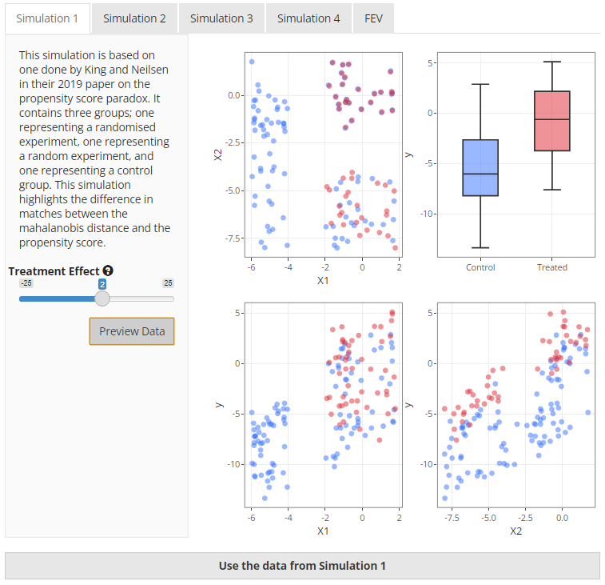
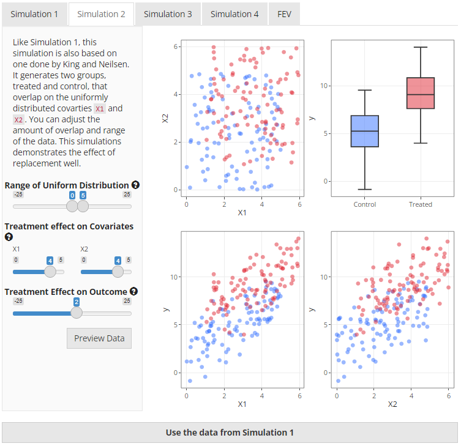
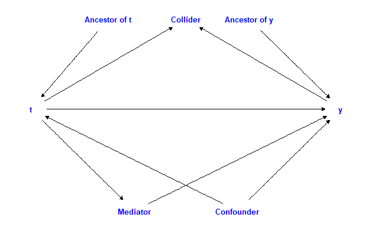
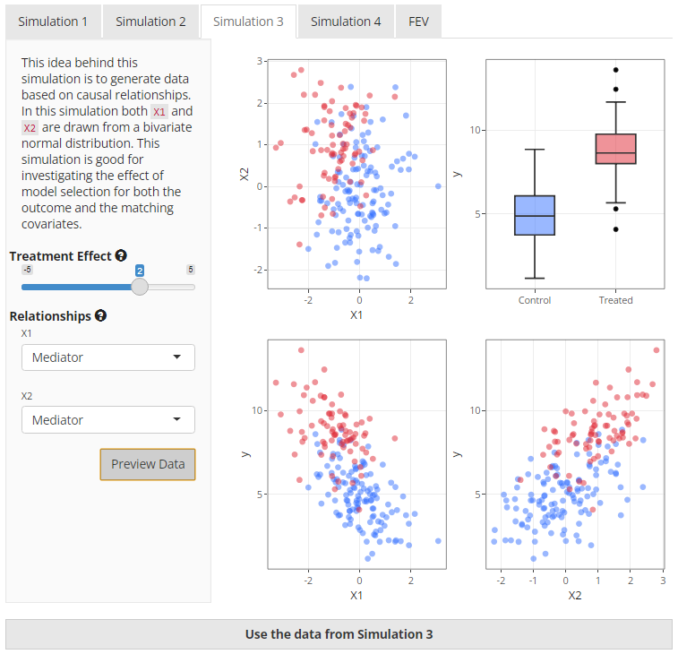
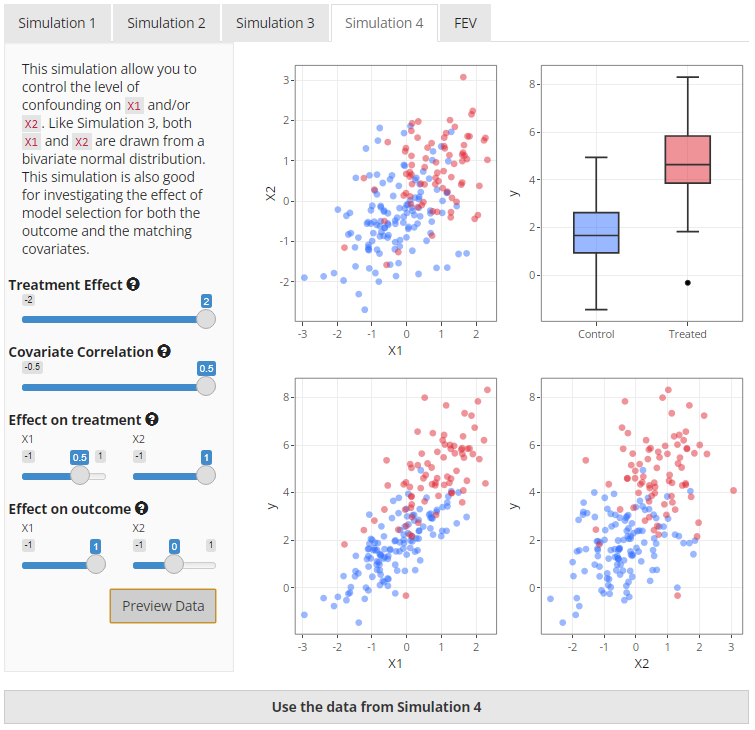
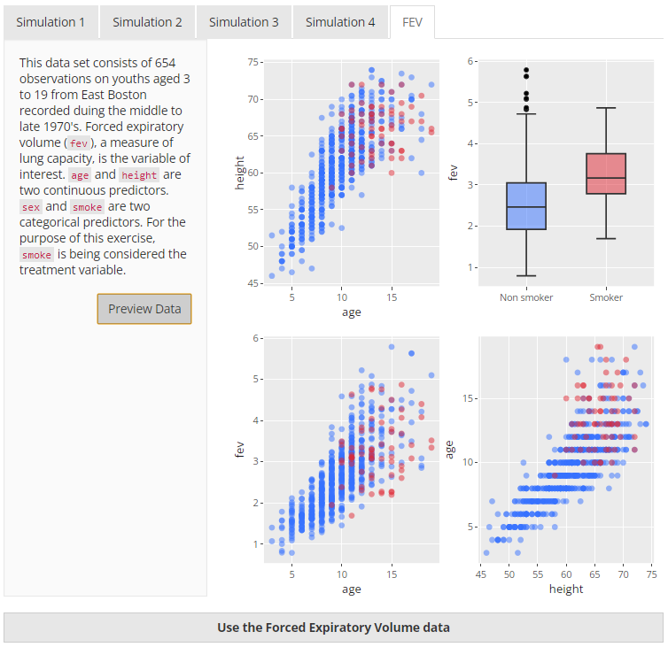

From the main page, clicking on the icon under the title opens up a modal dialogue box that is displayed in the following figures. This modal gives the user access to data from four different simulations and a real dataset. I will briefly outline each of the simulations below.
Simulation 1
This simulation is based on the data generation process described by King and Neilsen1. Essentially, it contains two experiments—a fully blocked randomised experiment and a completely randomised experiment—hidden within an imbalanced “observational” dataset. If you look at Figure 3, the first plot (top left) makes this clearer. The fully blocked randomised experiment is in the top right corner of the plot which is demonstrated by the treated (red) and untreated (blue) units being virtually right on top of one another. The completely randomised experiment is just below it in the bottom right corner of the plot and you can clearly see that there are similar numbers of treated and control units but they are not exactly matched. The imbalanced observational data is represented by the placement of the untreated unit on the left of the plot.
|  |
The purpose of this simulation in the paper was to demonstrate the ability of different matching methods to select the units in a logical order. Ideally, the data from the fully blocked randomised experiment should be matched first, then the data from the completely randomised experiment. It has been included in the app as it provides a clear demonstration of the performance of mahalanobis-based distance matching versus propensity score-based distance matching.
In the app, you are able to change the treatment effect but that should not change the outcome of the matching process in any way, only the calculation of the treatment estimate.
Simulation 2
Simulation 2 is also taken from King and Neilsen1 however the data is very
different. This simulation uses two overlapping uniform distributions
that both affect the treatment received and the outcome. When
visualising the two covariates, X1 and X2, on
a two dimensional field, the data has the appearance of a square of
treated units overlapped by a square of untreated units. This can be
clearly seen in the top left plot in Figure 4 below.
|  |
Users have the ability to change the range of the uniform
distribution, the strength of association between the covariates
(X1 and X2) and the treatment variable
(t), and the treatment effect on the outcome
(y). Probably the most useful illustration of this data is
to compare the same method of matching but change whether replacement is
used or not. It can be particularly striking if there is a strong
association between the covariates and treatment.
Simulation 3
This simulation uses causal relationships to define the effects
between the treatment, covariates, and outcome. There are five options
available to the user that can change the data generation relationships
between the treatment indicator t, the outcome
y and two covariates X1 and X2.
Figure 5 demonstrates how each of the options fit into a causal diagram
with an arrow pointing in the direction of the assumed effect in the
data generation process.
|  |
To generate the data, first we create the covariates, X1
and X2, as a bivariate normal distribution with a covariate
correlation of 0.2. The treatment variable is then generated based on
the selection after which the function then iteratively works through
the selected options and applies changes to the data as appropriate. It
should be noted that the user can not change the strength of the effects
in this simulation. Nor can the relationship between t and
y be changed, although they can both be altered via
X1 and X2. Other than the causal relationship,
only the treatment effect can be modified. This has been done to allow
for simple data generation. Figure 6 below gives an overview of what the
generated data may look like.
|  |
Simulation 4
This is the last simulation. Like simulation 3, X1 and
X2 are taken from a bivariate normal distribution. However,
in this simulation, X1 and X2 can effectively
act as confounder, an ancestor of t, or an ancestor of
y. This is achieved by altering the weights of the effect
on the treatment or the effect on the outcome. In addition, you can
change the covariance correlation which will increase the correlation of
X1 and X2. See Figure 7 below for a preview of
what the data from Simulation 4 may look like.
|  |
Real Data - FEV
The Forced Expiratory Volume dataset is available from the
mplot2 package. For the purposes of the
app, it has been utilised to demonstrate how matching works on real data
using smoke as the treatment variable and fev
as the outcome. This dataset was ideal for this project because it was
relatively small, contains only a few variables, and contains a
treatment and outcome variable. A preview of the data is below in Figure
8.
|  |